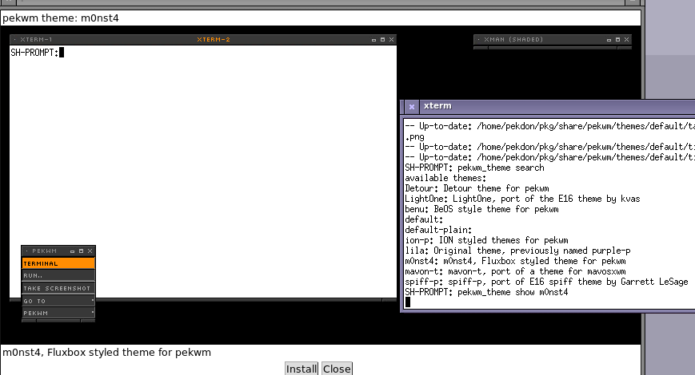

pekwm_theme utility
As part of getting pekwm back on track the infrastructure for a theme index has started to take shape with the following components:
- pekwm-theme-index, a repository on GitHub with a collection of theme files containing meta-data about themes.
- pekwm-theme-page, the page and screenshot generator for https://www.pekwm.se/themes/ based on the data from pekwm-theme-index.
- pekwm_theme, shell script included with pekwm for managing user themes.
This post focus on the last component in the list above, the user command for managing themes.
The idea behind this tool started from discussions in the #pekwm channel on freenode, where the idea behind the search and show functions came to existence.
Fueled with energy from my dislike of the current state of the *-look series of sites with the ads, cryptic filenames and broken links I hacked up a first version of the pekwm_theme command during a longer than usual morning coffee session.
The command have the following external dependencies:
- curl, wget or ftp (on BSD) for fetching the theme index.
- git for fetching themes.
- awk, grep and sed for theme index handling.
In addition the command use another new pekwm utility, ekwm_dialog inspired by the xmessage command which I will write more about in another post.
Here is a screenshot of the pekwm_theme utility in action with a preview of the m0nst4 theme shown in pekwm_dialog:

Pressing install will fetch and activate the theme, activation use the pekwm_themeset.sh script that drives the Theme menu.
If you feel brave (or not so brave), fetch pekwm from git and try it out. If you have any issues, report them on Github or #pekwm on freenode!